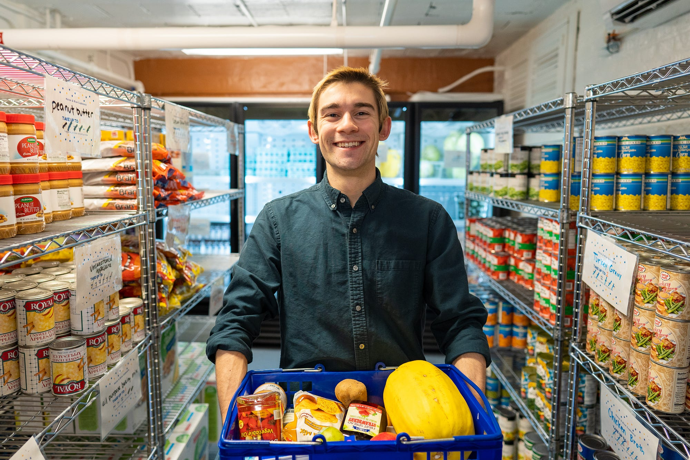

Welcome To Maize & Blue Cupboard
Our Mission
To ensure members of the University of Michigan community—whether on a tight budget or physically restrained from getting to a grocery store—receive equitable access to healthy, nutritious, and nourishing food and the ability to prepare it for themselves or others.
Make An Appointment Now
Shopping at the Maize and Blue Cupboard is by appointment only. Please make an appointment by visiting our sign up page here.
Who We Are
College students and staff are experiencing food insecurity at alarming rates. The Maize and Blue Cupboard is here to provide an immediate and comprehensive response for the U-M community. By offering resources, educational opportunities, compassionate support and more, we help students develop the skills to make informed decisions.
Read our FAQs to learn more about the Maize and Blue Cupboard and how you can get help.
What We Provide
- FOOD: Produce, dairy, meat, bread, frozen and shelf-stable foods (i.e. rice, cans, tuna, etc)
- KITCHEN & COOKING: Dishes, silverware, pots & pans, Tupperware, cutting boards, knives, and other kitchenware
- PERSONAL & HOUSEHOLD: Trash bags, toilet paper, cleaning supplies, hygiene products, school supplies, baby items and more
- SUPPORT: Get connected to campus experts like CAPS, Dean of Students and Financial Aid, as well as SNAP (Michigan’s food program)
Recent News
2024 Mobile Distribution for North Campus
U-M's Maize & Blue Cupboard (MBC), the College of Engineering, Student Life, and Ann Arbor-based Food Gatherers will host North Campus mobile food distributions to make MBC resources more accessible for North Campus residents.
Location
Located in the basement of the Betsy Barbour Residence Hall, please enter via the Maynard entrance only to ensure privacy for residents. Please contact us if you need ramp or elevator access.
Address: 420 S State St Ann Arbor, MI 48109
Phone: 734-936-2794
Hours
On Monday 10/30 the Maize and Blue Cupboard will transition to shopping by appointment only. Schedule your shopping appointment here.